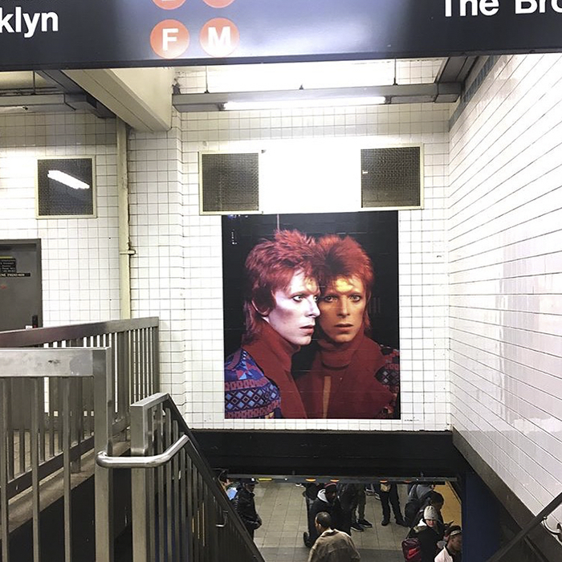
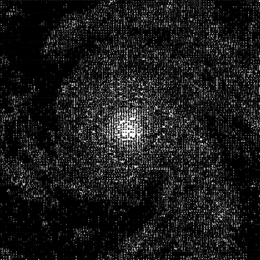
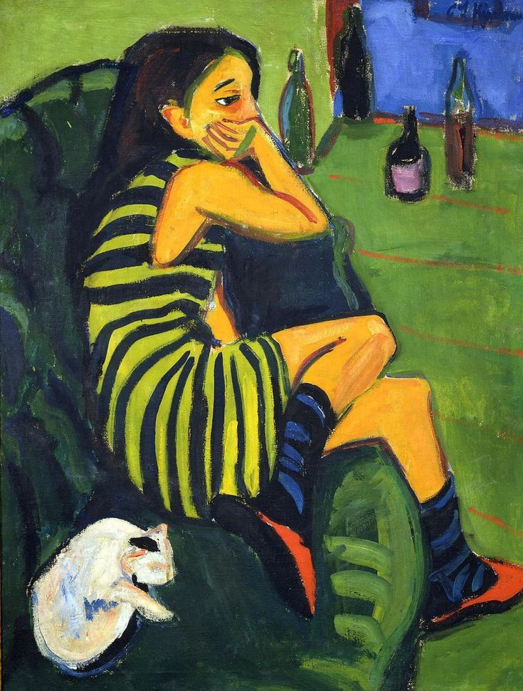

so please do not write to tell me about any more beautiful blue things. to be fair, this book will not tell you about any, either. it will not say 'isn't x beautiful?' such demands are murderous to beauty. the most i want to do is show you the end of my index finger. its muteness.
- bluets, maggie nelson
this is where i show the end of my index finger
therapeutic repetition

commonplace wall
(last update: 13/12)
- my friend diego's blog
extremely cool and so aesthetically pleasing -
the waste land, t.s. eliot
‘you gave me hyacinths first a year ago; / ‘they called me the hyacinth girl.’ / — yet when we came back, late, from the hyacinth garden, / your arms full, and your hair wet, i could not / speak, and my eyes failed, i was neither / living nor dead, and i knew nothing, / looking into the heart of light, the silence. / oed’ und leer das meer. -
àgua viva, clarice lispector
'what shall i tell you? i shall tell you the instants. i go too far and only then do i exist in a feverish way' -
wong kar-wai's filmography
< if memories could be canned, would they also have expiration dates? > - wittgenstein's tractatus 7. whereof one cannot speak, thereof one must be silent

Margaret Atwood, in Power Politics:
“Because you are never here
but always there, I forget
not you but what you look like
You drift down the street
in the rain, your face
dissolving, changing shape, the colours
running together
My walls absorb
you, breathe you forth
again, you resume
yourself, I do not recognize you
You rest on the bed
watching me watching
you, we will never know
each other any better
than we do now”
«Miser Catulle, desinas ineptire,
Et quod vides perisse perditum ducas.
Fulsere quondam candidi tibi soles,
Cum ventitabas quo puella ducebat
Amata nobis quantum amabitur nulla.
Ibi illa multa tum iocosa fiebant,
Quae tu volebas nec puella nolebat.
Fulsere vere candidi tibi soles.
Nunc iam illa non volt: tu quoque, inpotens, noli,
Nec quae fugit sectare, nec miser vive,
Sed obstinata mente perfer, obdura.
Vale, puella! iam Catullus obdurat,
Nec te requiret nec rogabit invitam:
At tu dolebis, cum rogaberis nulla.
Scelesta, vae te! quae tibi manet vita!
Quis nunc te adibit? cui videberis bella?
Quem nunc amabis? cuius esse diceris?
Quem basiabis? cui labella mordebis?
At tu, Catulle, destinatus obdura..»
